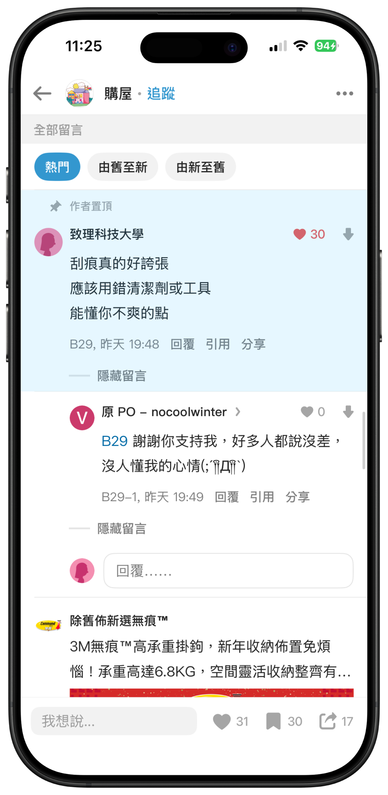
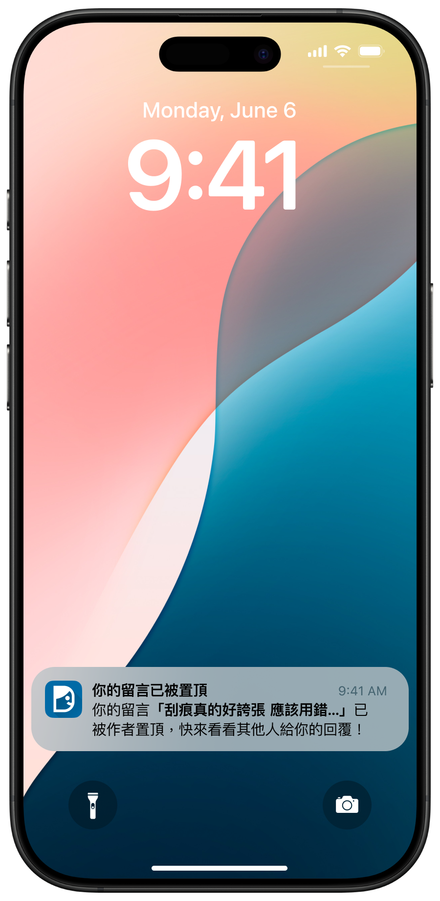
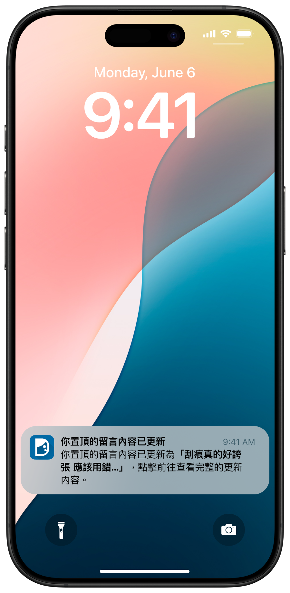
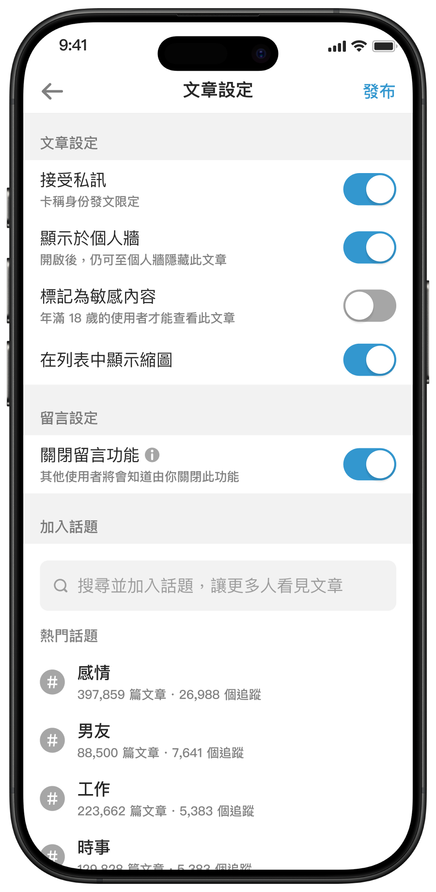
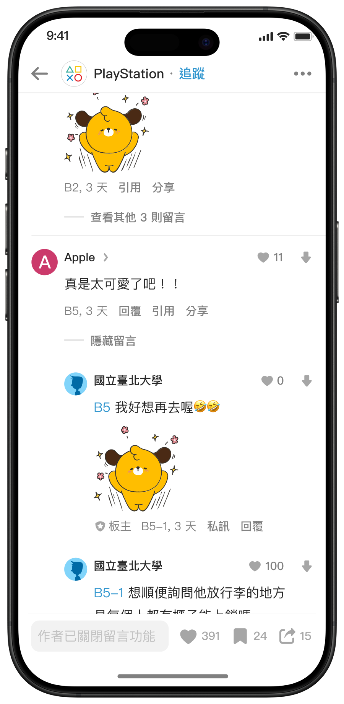

Dcard・全台最大匿名社群平台
推出漸進式留言管理工具，平衡作者安全與公共討論品質
提供作者適度且透明的留言管理能力，降低惡意互動與討論歪樓帶來的無力感，同時維持公開討論的可見性與平台信任，支持作者持續創作
匿名是 Dcard 降低表達門檻的重要產品特色，但既有留言治理機制不足，使作者在面對惡意留言、討論歪樓與檢舉處理緩不濟急時，缺乏即時且有效的管理工具
團隊初期傾向採用低成本的「讓作者隱藏留言」，快速緩解作者的心理壓力。但我認為此方案忽略 Dcard 作為公共討論平台的領域屬性，可能將適用於個人主場的管理方式，錯誤套用到公共討論空間。透過平台治理模式比較與使用者訪談，我歸納出三個需要重新考量的問題：
公開討論不能直接套用個人社群的管理邏輯
「隱藏留言」在 Facebook 個人動態牆、Instagram 等私領域 (個人主場) 很常見；但 Dcard 看板屬於公領域 (公共廣場)，文章一發出就是公共討論資產，讓作者單方面隱藏留言，可能會造成資訊偏誤，使其他讀者無法理解完整的討論脈絡，進而傷害平台的討論透明度與信任。
公共討論需要明確的治理邊界
檢視同樣具備公領域特性的產品 (Facebook Groups、X Community、知乎圈子、Reddit)，發現作者管理權限必須搭配清楚的規則與可見性設計，否則過大的單方控制權可能造成討論失衡與一言堂。
作者的痛點是管理討論，而非單純消音
使用者訪談顯示，作者主要面臨兩類無力感：一是留言歪樓，讓原文目的與討論焦點被稀釋；二是遭遇惡意攻擊時，缺乏即時防禦與情緒緩衝機制。因此，作者真正需要的不只是隱藏留言，而是能引導討論方向，並在必要時保護自己免於持續承受高壓互動的工具。
如何在「保障作者心理安全」與「維持公共討論可見性」之間，建立具有防濫用機制的留言管理工具？
我將團隊從功能開發導向的解法，拉回平台治理原則，並將核心命題重塑為上述問題。為此，我建立三項設計原則，作為後續功能評估與取捨的依據：
作者掌控感
讓作者有能力管理討論方向，並在面對惡意互動時適度保護自己
討論透明度
場控不等於消音，已發出的正常討論須維持公開可見或具備透明狀態標示
防範濫用
機制設計必須避免作者單方面排除異議或操弄討論方向，維持公共討論的基本公平性
盤點市場上五種不同強度的留言管理方式，依三項設計原則評估取捨
最終選擇推出兩階段的漸進式留言管理工具，分別處理不同程度的討論管理需求
置頂留言
功能設計
作者可置頂特定留言，以定調討論方向或補充說明
防濫用設計
限制置頂數量上限，並在留言被置頂時通知留言者、置頂內容異動時也通知作者，透過雙向通知提高透明度、降低黑箱操作疑慮



暫停留言
功能設計
作者於發文前或發文後，皆可一鍵暫停該篇文章的留言功能
防濫用設計
留言區明確顯示「作者已關閉該篇文章的留言功能」，讓讀者清楚理解互動狀態，避免出現「留言遭到暗中限制或刪除」的疑慮


功能上線後，有使用功能的作者相較於未使用者，呈現較高的創作與互動表現；較常面臨惡意留言壓力的活躍作者也展現較高的功能採用意願：
月平均發文量
2.0–2.2x有使用功能者 vs. 未使用者月平均留言回覆互動量
2.8–3.0x有使用功能者 vs. 未使用者月平均活躍天數
1.7–2.0x有使用功能者 vs. 未使用者平台治理護欄
為確認作者管理權限增加沒有犧牲整體討論品質，上線後同步追蹤整體留言量變化、留言檢舉率、關閉留言文章占比、異常置頂審查，依據當時觀察，未發現大規模一言堂或整體討論量崩跌的情況